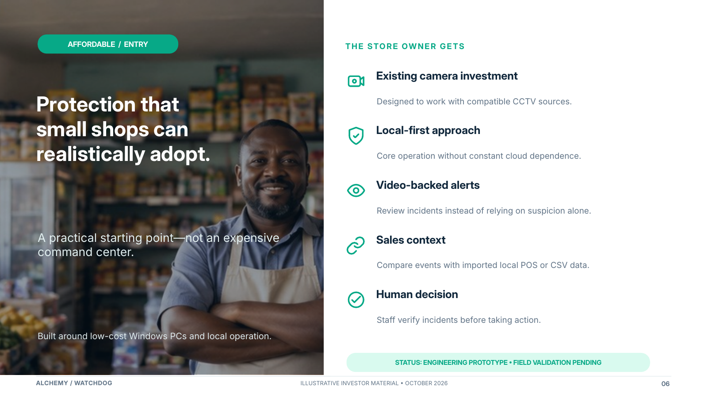
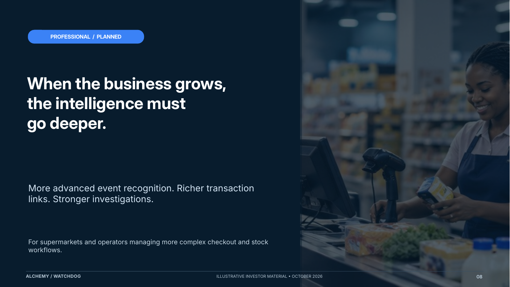
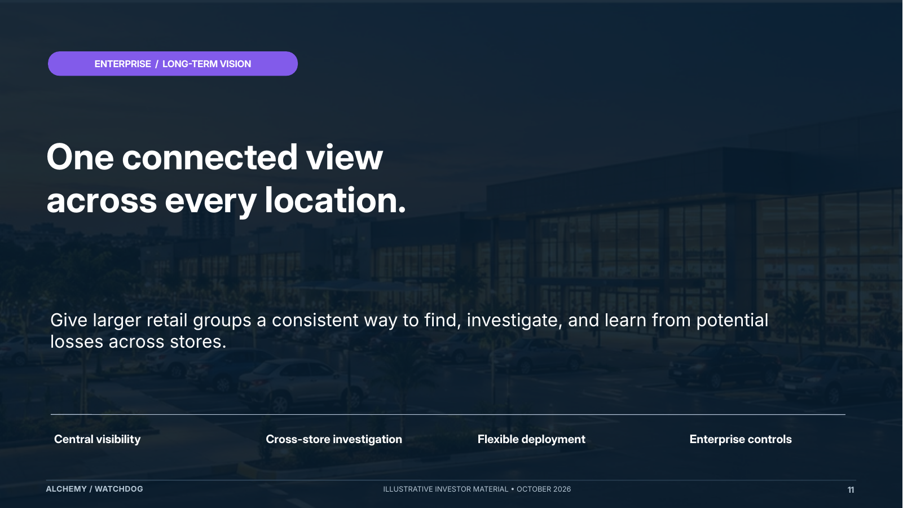
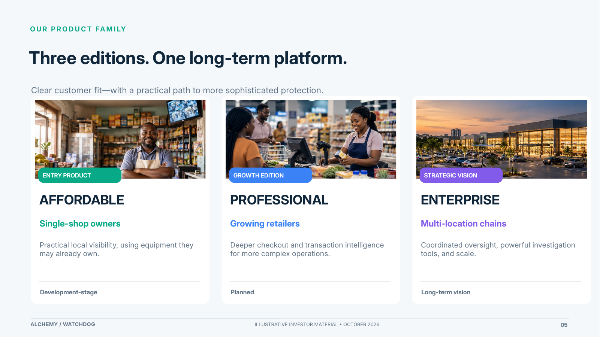

Entry product · Development stage
Affordable
Start with a single store: use existing cameras, local review tools and compatible business records, while prioritizing simpler setup and modest computer costs.
An accessible look at how Alchemy Watchdog can grow from affordable, single-store monitoring into deeper investigations and multi-location retail intelligence. This is a product strategy, not a claim that every feature is available today.
Three editions, one platform direction
The same mission—turning video and business records into reviewable insights—can serve very different retail needs.

Start with a single store: use existing cameras, local review tools and compatible business records, while prioritizing simpler setup and modest computer costs.

For growing retailers: stronger detection of checkout and stock-handling events, more live data connections, richer reports and improved investigations.

For larger retail groups: secure multi-store oversight, specialized vision intelligence, more integrations and enterprise-grade operational support.
Investor & developer briefing
The presentation explains the market problem, the product editions, commercial model, long-term direction and evidence still required before launch. Navigate by thumbnails, search slide text and review the original notes.
Launch presentation ↗
For reviewers and contributors
This repository contains the Alchemy marketing website. It is not the complete Windows Watchdog application source, and the presentation is strategy material rather than an engineering test report.